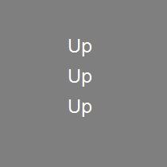
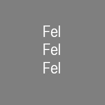
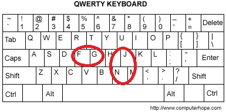

Ebben a kísérletben arra vagyunk kíváncsiak, hogy az emberek hogyan figyelnek a vizuális ingerekre.
Minden próbában először három azonos szót fogsz látni egymás fölött a képernyő közepén.
A három szó minden próbában csak Fel, Le, Bal és Jobb lehet.
A három szó nagyon gyorsan fog felvillanni, majd eltűnni.
Ezután egy szót fogsz látni a képernyő közepén.
Ez a szó is Bal, Jobb, Fel vagy Le lesz.
A feladatod az lesz, hogy beazonosítsd az egyedül álló szót (ne a három szót, ami előtte jelenik meg).
Ha az egyedül álló szó Bal, akkor nyomd meg az F billentyűt a bal középső ujjaddal!
Ha az egyedül álló szó Jobb, akkor nyomd meg a G billentyűt a bal mutatóujjaddal!
Ha az egyedül álló szó Fel, akkor nyomd meg a J billentyűt a jobb középső ujjaddal!
Ha az egyedül álló szó Le, nyomd meg az N billentyűt a jobb mutatóujjaddal!
Minden próbában próbálj meg olyan gyorsan válaszolni, amennyire lehetséges hibázás nélkül!
Hogy biztosan megértsd a feladatot, egy pár próbafeladatot adunk neked először.
Ha hibázol, akkor egy hibaüzenet fog megjelenni.
A próbafeladatok után 4 kör tesztfeladat fog következni.
Minden tesztfeladat kör körülbelül 3 percig és 20 másodpercig tart. A körök között egy rövid szünetet is tarthatsz.
A kísérlet egésze körülbelül 16 perc lesz.


Miközben a feladatot csinálod kérünk, helyezd az ujjaid a következő módon: f = bal középső ujj, g = bal mutatóujj, j =
jobb mutatóujj, n = jobb középső ujj:

Nagyon fontos, hogy a kísérlet során végig tudj összpontosítani! Kérünk, hogy ne csinálj semmi mást, miközben a feladatot
csinálod!
Kérünk, vedd figyelembe, hogy ha a megoldásod pontossága 70%-nál alacsonyabb lesz, ami egy ésszerű határ az előző kutatások
fényében, akkor csak 0,5 pontot kapsz a kitöltésért. Ha 70% feletti pontossággal oldod meg a feladatot, akkor 1 pontot
kapsz a „Pszichológiai kísérletben és tudományos aktivitásban való részvétel” nevű kurzuson.